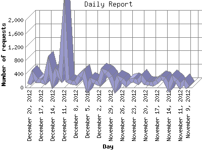

The Daily Report identifies the activity for each day within the reporting period. Remember that one page hit can result in several server requests as the images for each page are loaded.

| Day | Number of requests | Number of page requests | |
|---|---|---|---|
| 1. | November 9, 2012 | 0 | 0 |
| 2. | November 10, 2012 | 157 | 67 |
| 3. | November 11, 2012 | 51 | 47 |
| 4. | November 12, 2012 | 214 | 144 |
| 5. | November 13, 2012 | 288 | 83 |
| 6. | November 14, 2012 | 0 | 0 |
| 7. | November 15, 2012 | 255 | 98 |
| 8. | November 16, 2012 | 281 | 107 |
| 9. | November 17, 2012 | 172 | 109 |
| 10. | November 18, 2012 | 100 | 74 |
| 11. | November 19, 2012 | 113 | 62 |
| 12. | November 20, 2012 | 127 | 88 |
| 13. | November 21, 2012 | 297 | 110 |
| 14. | November 22, 2012 | 158 | 79 |
| 15. | November 23, 2012 | 229 | 119 |
| 16. | November 24, 2012 | 194 | 87 |
| 17. | November 25, 2012 | 88 | 60 |
| 18. | November 26, 2012 | 226 | 70 |
| 19. | November 27, 2012 | 282 | 115 |
| 20. | November 28, 2012 | 0 | 0 |
| 21. | November 29, 2012 | 314 | 123 |
| 22. | November 30, 2012 | 449 | 115 |
| 23. | December 1, 2012 | 491 | 244 |
| 24. | December 2, 2012 | 120 | 102 |
| 25. | December 3, 2012 | 166 | 87 |
| 26. | December 4, 2012 | 225 | 142 |
| 27. | December 5, 2012 | 0 | 0 |
| 28. | December 6, 2012 | 440 | 103 |
| 29. | December 7, 2012 | 323 | 139 |
| 30. | December 8, 2012 | 141 | 115 |
| 31. | December 9, 2012 | 143 | 94 |
| 32. | December 10, 2012 | 205 | 86 |
| 33. | December 11, 2012 | 1,920 | 218 |
| 34. | December 12, 2012 | 320 | 98 |
| 35. | December 13, 2012 | 477 | 80 |
| 36. | December 14, 2012 | 172 | 115 |
| 37. | December 15, 2012 | 679 | 102 |
| 38. | December 16, 2012 | 166 | 89 |
| 39. | December 17, 2012 | 210 | 102 |
| 40. | December 18, 2012 | 202 | 106 |
| 41. | December 19, 2012 | 391 | 73 |
| 42. | December 20, 2012 | 106 | 60 |
Most active day August 16, 2012 : 482 pages sent. 1,920 requests handled.
Daily average: 102 pages sent. 286 requests handled.
This report was generated on December 21, 2012 03:11.
Report time frame April 12, 2012 00:01 to December 20, 2012 23:52.
| Web statistics report produced by: analog 5.1 / Report Magic 2.21 |